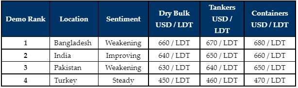

inWeekly Demolition Reports28/03/2022

It has been another challenging week in the sub-continent markets, with a resurgent India and a Bangladeshi market that is still reeling from some of the recent falls in local steel, which have seen nearly USD 50/LDT knocked off the prices this week alone.
India has managed to regain over half of the falls seen over the previous few weeks, but the market overall does remain extremely volatile.
Commodity prices and volatile currencies show few signs of cooling off any time soon, as the Russian invasion of Ukraine enters its second month and thus far shows no signs of abating. The Covid situation in China too may be a growing cause for concern as various cities (including the economic hub of Shanghai) enter a fresh series of lockdowns, while the rest of the world is just starting to open again.
The fact that there is very little natural immunity or a fully workable vaccine coverage (that hasn’t already begun to wane) mean that China could be faced with another challenging period, both socially & economically and we can only hope that future virus mutations and inevitable closures do not become a part of everyday life once again.
While mills in Bangladesh had recently stopped buying steel at these higher overall levels approaching USD 700/LDT, they have however, slowly started to acquire small portions of inventory just to stay open and this will surely lead to greater confidence in purchasing larger amounts in due course, in iorder to bring Chattogram prices back up again.
Finally, the Turkish market sails through an uneventful week, with no changes or fresh arrivals reported.
For week 12 of 2022, GMS demo rankings / pricing for the week are as below.

📄 Download PDF: 2022-03-28XoX_org.pdfSource: GMS,Inc. ,https://www.gmsinc.net/gms_new/index.php/web